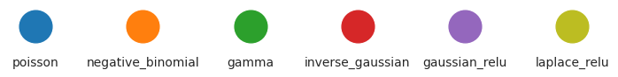
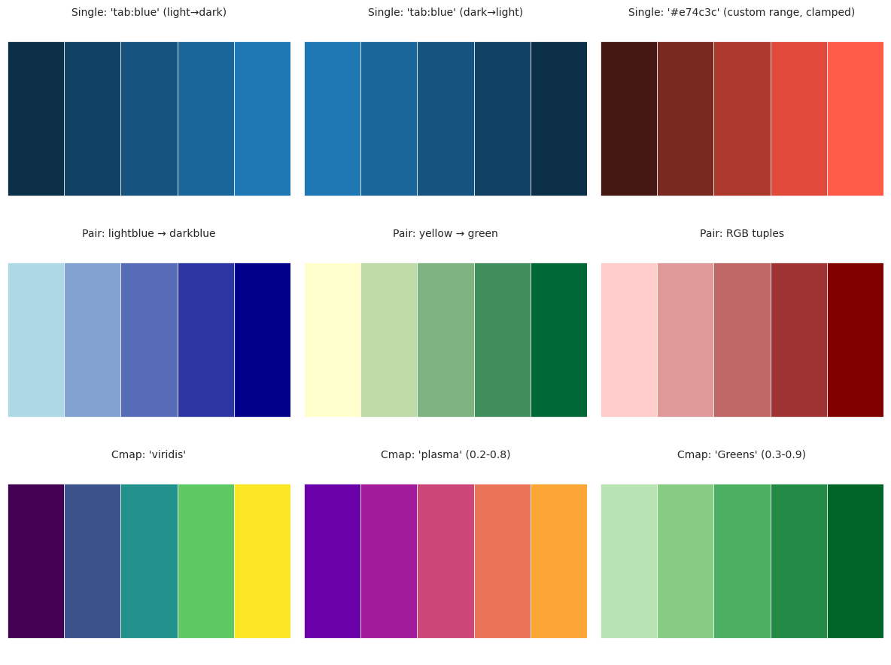
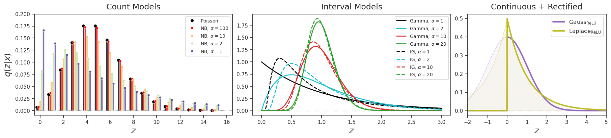

(03) various VAEs: dist PDF plots#
project = P-VAE, host = chewie, device = cuda:1
Motivation: used for the full metabolic cost VAE paper
Goal: MetabolicCost
device_idx = 1
device = f'cuda:{device_idx}'
print(f"device: {device} ——— host: {os.uname().nodename}")
device: cuda:1 ——— host: mach
Dists plots#
pal = {
'poisson': 'C0',
'negative_binomial': 'C1',
'gamma': 'C2',
'inverse_gaussian': 'C3',
'gaussian_relu': 'C4',
'laplace_relu': 'C8',
}
fig, ax = plt.subplots(figsize=(7.2, 1.2))
for i, (name, color) in enumerate(pal.items()):
ax.scatter(i, 0, color=color, s=700)
ax.text(i, -0.8, name, ha='center', va='top', fontsize=10)
ax.set_ylim(-0.5, 0.5)
ax.axis('off')
plt.tight_layout()
plt.show()

import numpy as np
import scipy.stats as sp_stats
import matplotlib.pyplot as plt
from matplotlib.colors import to_rgb
def plot_distribution_comparison(
shapes=5, lamb=6.0, colors=None,
figsize=(18, 4), width_ratios=[1, 1, 0.7],
**kwargs):
"""
Plot comparison of VAE distributions across three panels.
Parameters
----------
shapes : float, list, or dict
Shape/dispersion parameter(s) for NB, Gamma, and Inv. Gaussian.
- Single value or list: used for all distributions
- Dict: keys should match distribution names
('negative_binomial', 'gamma', 'inverse_gaussian')
lamb : float or dict
Rate parameter(s).
- Single value: used for all distributions
- Dict: keys should match distribution names
('poisson', 'negative_binomial', 'gamma', 'inverse_gaussian')
scale_signal : float
Scale parameter (σ for Gaussian, b for Laplace) for signal models.
colors : dict, optional
Custom colors for each distribution. Keys should match distribution names:
('poisson', 'negative_binomial', 'gamma', 'inverse_gaussian',
'gaussian_relu', 'laplace_relu')
Values can be:
- None: use default gradient from palette
- Single color (str or RGB tuple): use for all shapes
- List of colors: one per shape (must match number of shapes)
figsize : tuple
Figure size.
**kwargs : dict
Override any default styling parameters (see `defaults` dict in code).
"""
# =========================================================================
# Default parameters (can be overridden via kwargs)
# =========================================================================
defaults = {
# Panel 0: Count models
'count_xlim': (-0.5, 16.5),
'count_ylim': (-0.01, 0.2),
'count_x_range': (0, 16),
'bar_total_width': 0.7,
'bar_alpha': 0.8,
'bar_edgecolor': 'white',
'bar_edgewidth': 0.5,
'poisson_markersize': 7,
'nb_markersize': 5,
'marker_edgecolor': 'white',
'marker_edgewidth': 0.5,
# Panel 1: Interval models
'interval_xlim': None, # Auto
'interval_ylim': None, # Auto
'interval_x_range_factor': 3, # x goes from 0 to mean_isi * factor
'interval_n_points': 500,
'gamma_lw': 2,
'ig_lw': 2,
'ig_linestyle': '--',
# Panel 2: Rectified models
'scale_signal': 1.0,
'rect_xlim': (-2, 5),
'rect_ylim': None, # Auto
'rect_n_points': 1000,
'rect_fill_alpha': 0.05,
'rect_line_alpha': 0.3,
'rect_linestyle': '--',
'rect_lw': 3,
# General
'axhline_color': 'dimgrey',
'axhline_ls': ':',
'axhline_lw': 0.9,
'legend_fontsize_count': 10,
'legend_fontsize_interval': 10,
'legend_fontsize_rect': 12,
'label_fontsize': 18,
'title_fontsize': 17,
}
# Update defaults with any user-provided kwargs
params = {**defaults, **kwargs}
# =========================================================================
# Default color palette
# =========================================================================
pal = {
'poisson': 'C0',
'negative_binomial': 'C1',
'gamma': 'C2',
'inverse_gaussian': 'C3',
'gaussian_relu': 'C4',
'laplace_relu': 'C8',
}
# =========================================================================
# Process shapes parameter
# =========================================================================
def parse_shapes(shapes, key):
"""Extract shapes for a specific distribution."""
if isinstance(shapes, dict):
val = shapes.get(key, [5])
else:
val = shapes
if not hasattr(val, '__iter__') or isinstance(val, str):
val = [val]
return list(val)
# =========================================================================
# Process lamb parameter
# =========================================================================
def parse_lamb(lamb, key, default=1.0):
"""Extract lambda for a specific distribution."""
if isinstance(lamb, dict):
return lamb.get(key, default)
else:
return lamb
# =========================================================================
# Process colors parameter
# =========================================================================
def get_color_gradient(base_color, n, light_to_dark=True):
"""Generate n colors as gradients from a base color."""
base_rgb = to_rgb(base_color)
if n == 1:
return [base_color]
colors_list = []
for i in range(n):
if light_to_dark:
factor = 0.4 + 0.6 * (i / (n - 1))
else:
factor = 1.0 - 0.6 * (i / (n - 1))
new_rgb = tuple(c * factor for c in base_rgb)
colors_list.append(new_rgb)
return colors_list
def parse_colors(colors, key, n_shapes, default_base):
"""
Extract colors for a specific distribution.
Parameters
----------
colors : dict or None
User-provided colors dict
key : str
Distribution key
n_shapes : int
Number of shapes (determines how many colors needed)
default_base : str
Default base color from palette for gradient
Returns
-------
list of colors, one per shape
"""
if colors is None or key not in colors or colors[key] is None:
# Use default gradient
return get_color_gradient(default_base, n_shapes, light_to_dark=True)
user_colors = colors[key]
# Single color provided - use for all shapes
if isinstance(user_colors, str) or (isinstance(user_colors, tuple) and len(user_colors) in [3, 4]):
return [user_colors] * n_shapes
# List of colors provided
if hasattr(user_colors, '__iter__'):
user_colors = list(user_colors)
if len(user_colors) != n_shapes:
raise ValueError(
f"colors['{key}'] has {len(user_colors)} colors but {n_shapes} shapes provided. "
f"Must match or provide a single color."
)
return user_colors
# Single color of unknown type - try to use it
return [user_colors] * n_shapes
def parse_single_color(colors, key, default_base):
"""Extract a single color for distributions without shape variation."""
if colors is None or key not in colors or colors[key] is None:
return default_base
return colors[key]
# =========================================================================
# Parse all parameters
# =========================================================================
shapes_nb = parse_shapes(shapes, 'negative_binomial')
shapes_gamma = parse_shapes(shapes, 'gamma')
shapes_ig = parse_shapes(shapes, 'inverse_gaussian')
lamb_poisson = parse_lamb(lamb, 'poisson', default=6.0)
lamb_nb = parse_lamb(lamb, 'negative_binomial', default=6.0)
lamb_gamma = parse_lamb(lamb, 'gamma', default=1.0)
lamb_ig = parse_lamb(lamb, 'inverse_gaussian', default=1.0)
# Sort NB shapes in descending order (larger alpha = closer to Poisson)
shapes_nb_sorted = sorted(shapes_nb, reverse=True)
# Get colors for each distribution
color_poisson = parse_single_color(colors, 'poisson', pal['poisson'])
colors_nb = parse_colors(colors, 'negative_binomial', len(shapes_nb_sorted), pal['negative_binomial'])
colors_gamma = parse_colors(colors, 'gamma', len(shapes_gamma), pal['gamma'])
colors_ig = parse_colors(colors, 'inverse_gaussian', len(shapes_ig), pal['inverse_gaussian'])
color_gaussian = parse_single_color(colors, 'gaussian_relu', pal['gaussian_relu'])
color_laplace = parse_single_color(colors, 'laplace_relu', pal['laplace_relu'])
fig, axes = create_figure(nrows=1, ncols=3, figsize=figsize, width_ratios=width_ratios)
# =========================================================================
# Panel 0: Poisson / Negative Binomial (Count Models) - GROUPED BARS
# =========================================================================
ax = axes[0]
x_k = np.arange(*params['count_x_range'])
n_shapes_nb = len(shapes_nb_sorted)
n_dists = 1 + n_shapes_nb
total_width = params['bar_total_width']
bar_width = total_width / n_dists
offsets = np.linspace(-total_width/2 + bar_width/2,
total_width/2 - bar_width/2,
n_dists)
# Poisson
y_pmf_poisson = sp_stats.poisson.pmf(x_k, lamb_poisson)
x_poisson = x_k + offsets[0]
ax.bar(x_poisson, y_pmf_poisson, width=bar_width, color=color_poisson,
alpha=params['bar_alpha'], edgecolor=params['bar_edgecolor'],
linewidth=params['bar_edgewidth'])
ax.plot(x_poisson, y_pmf_poisson, 'o', color=color_poisson,
markersize=params['poisson_markersize'], label=r'$\mathrm{Poisson}$',
markeredgecolor=params['marker_edgecolor'],
markeredgewidth=params['marker_edgewidth'])
# Negative Binomial
for i, alpha in enumerate(shapes_nb_sorted):
p = alpha / (alpha + lamb_nb)
y_pmf_nb = sp_stats.nbinom.pmf(x_k, n=alpha, p=p)
x_nb = x_k + offsets[i + 1]
label = rf'$\mathrm{{NB}},\, \alpha={alpha}$'
ax.bar(x_nb, y_pmf_nb, width=bar_width, color=colors_nb[i],
alpha=params['bar_alpha'], edgecolor=params['bar_edgecolor'],
linewidth=params['bar_edgewidth'])
ax.plot(x_nb, y_pmf_nb, 'o', color=colors_nb[i],
markersize=params['nb_markersize'], label=label,
markeredgecolor=params['marker_edgecolor'],
markeredgewidth=params['marker_edgewidth'])
ax.axhline(0, color=params['axhline_color'], ls=params['axhline_ls'],
lw=params['axhline_lw'])
if params['count_xlim'] is not None:
ax.set_xlim(params['count_xlim'])
if params['count_ylim'] is not None:
ax.set_ylim(params['count_ylim'])
ax.set_ylabel(r'$q(z \vert x)$', fontsize=params['label_fontsize'])
ax.set_xlabel(r'$z$', fontsize=params['label_fontsize'])
ax.set_title('Count Models', fontsize=params['title_fontsize'], y=1.02)
ax.legend(fontsize=params['legend_fontsize_count'], frameon=True, loc='upper right')
# =========================================================================
# Panel 1: Gamma / Inverse Gaussian (Interval Models)
# =========================================================================
ax = axes[1]
# Compute x_grid based on the larger mean ISI
mean_isi_gamma = 1.0 / lamb_gamma
mean_isi_ig = 1.0 / lamb_ig
max_mean_isi = max(mean_isi_gamma, mean_isi_ig)
x_grid = np.linspace(0.001, max_mean_isi * params['interval_x_range_factor'],
params['interval_n_points'])
for i, alpha in enumerate(shapes_gamma):
gamma_shape = alpha
gamma_scale = 1.0 / (alpha * lamb_gamma)
y_gamma = sp_stats.gamma.pdf(x_grid, a=gamma_shape, scale=gamma_scale)
ax.plot(x_grid, y_gamma, color=colors_gamma[i], lw=params['gamma_lw'],
label=rf'$\mathrm{{Gamma}},\, \alpha={alpha}$')
for i, alpha in enumerate(shapes_ig):
mu_param = 1.0 / lamb_ig
lambda_param = alpha
y_ig = np.sqrt(lambda_param / (2 * np.pi * x_grid**3)) * \
np.exp(-lambda_param * (x_grid - mu_param)**2 / (2 * mu_param**2 * x_grid))
ax.plot(x_grid, y_ig, color=colors_ig[i], lw=params['ig_lw'],
linestyle=params['ig_linestyle'],
label=rf'$\mathrm{{IG}},\, \alpha={alpha}$')
ax.axhline(0, color=params['axhline_color'], ls=params['axhline_ls'],
lw=params['axhline_lw'])
if params['interval_xlim'] is not None:
ax.set_xlim(params['interval_xlim'])
if params['interval_ylim'] is not None:
ax.set_ylim(params['interval_ylim'])
ax.set_xlabel(r'$z$', fontsize=params['label_fontsize'])
ax.set_title('Interval Models', fontsize=params['title_fontsize'], y=1.02)
ax.legend(fontsize=params['legend_fontsize_interval'], frameon=True)
# =========================================================================
# Panel 2: Truncated Gaussian / Laplace (ReLU)
# =========================================================================
ax = axes[2]
xlim = params['rect_xlim']
x_grid = np.linspace(xlim[0], xlim[1], params['rect_n_points'])
# Gaussian + ReLU
y_gauss = sp_stats.norm.pdf(x_grid, loc=0, scale=params['scale_signal'])
ax.fill_between(x_grid, y_gauss, color=color_gaussian,
alpha=params['rect_fill_alpha'])
ax.plot(x_grid, y_gauss, color=color_gaussian,
alpha=params['rect_line_alpha'], linestyle=params['rect_linestyle'])
y_gauss_relu = np.where(x_grid < 0, 0, y_gauss)
ax.plot(x_grid, y_gauss_relu, color=color_gaussian, lw=params['rect_lw'],
label=r'$\mathrm{Gauss}_\mathrm{ReLU}$')
# Laplace + ReLU
y_laplace = sp_stats.laplace.pdf(x_grid, loc=0, scale=params['scale_signal'])
ax.fill_between(x_grid, y_laplace, color=color_laplace,
alpha=params['rect_fill_alpha'])
ax.plot(x_grid, y_laplace, color=color_laplace,
alpha=params['rect_line_alpha'], linestyle=params['rect_linestyle'])
y_laplace_relu = np.where(x_grid < 0, 0, y_laplace)
ax.plot(x_grid, y_laplace_relu, color=color_laplace, lw=params['rect_lw'],
label=r'$\mathrm{Laplace}_\mathrm{ReLU}$')
ax.axhline(0, color=params['axhline_color'], ls=params['axhline_ls'],
lw=params['axhline_lw'])
ax.set_xlim(params['rect_xlim'])
if params['rect_ylim'] is not None:
ax.set_ylim(params['rect_ylim'])
ax.set_xlabel(r'$z$', fontsize=params['label_fontsize'])
ax.set_title('Continuous + Rectified', fontsize=params['title_fontsize'], y=1.02)
ax.legend(fontsize=params['legend_fontsize_rect'], frameon=True)
return fig, axes
import numpy as np
import matplotlib.pyplot as plt
import matplotlib.colors as mcolors
from matplotlib.colors import to_rgb
def make_color_gradient(source, n, light_to_dark=True, min_factor=0.4, max_factor=1.0,
cmap_range=(0.0, 1.0)):
"""
Generate n colors as a gradient.
Parameters
----------
source : str, tuple, list, or matplotlib colormap
Color source, can be:
- Single color: str ('C0', 'tab:blue', '#1f77b4') or RGB tuple (0.1, 0.2, 0.5)
Creates gradient by darkening/lightening
- Pair of colors: list/tuple of 2 colors, e.g., ['lightblue', 'darkblue']
Interpolates between them
- Colormap: str name ('viridis', 'plasma') or matplotlib Colormap object
Samples n colors from the colormap
n : int
Number of colors to generate
light_to_dark : bool
For single color mode: if True, gradient goes light to dark. If False, dark to light.
For pair/cmap mode: if False, reverses the gradient direction.
min_factor : float
For single color mode: minimum brightness factor (0-1)
max_factor : float
For single color mode: maximum brightness factor (0-1)
cmap_range : tuple of (float, float)
For colormap mode: range of colormap to sample from (0-1).
E.g., (0.2, 0.8) avoids extreme light/dark ends.
Returns
-------
list of RGB tuples
Examples
--------
# Single color (darken/lighten)
make_color_gradient('tab:blue', 5)
make_color_gradient('#e74c3c', 3, light_to_dark=False)
# Pair of colors (interpolate)
make_color_gradient(['lightblue', 'darkblue'], 5)
make_color_gradient([(0.9, 0.9, 0.2), (0.1, 0.5, 0.1)], 4)
# Colormap
make_color_gradient('viridis', 5)
make_color_gradient('coolwarm', 5, cmap_range=(0.2, 0.8))
make_color_gradient(plt.cm.Greens, 4, cmap_range=(0.3, 0.9))
"""
if n < 1:
return []
# Detect source type
source_type = _detect_source_type(source)
if source_type == 'single':
colors = _gradient_from_single(source, n, light_to_dark, min_factor, max_factor)
elif source_type == 'pair':
colors = _gradient_from_pair(source, n, light_to_dark)
elif source_type == 'cmap':
colors = _gradient_from_cmap(source, n, light_to_dark, cmap_range)
else:
raise ValueError(f"Cannot interpret source: {source}")
return colors
def _detect_source_type(source):
"""Detect whether source is a single color, pair of colors, or colormap."""
# Check if it's a matplotlib colormap object
if isinstance(source, mcolors.Colormap):
return 'cmap'
# Check if it's a string
if isinstance(source, str):
# Try to interpret as colormap name
try:
plt.cm.get_cmap(source)
return 'cmap'
except ValueError:
pass
# Otherwise it's a single color string
return 'single'
# Check if it's a tuple/list
if isinstance(source, (list, tuple)):
# RGB/RGBA tuple (single color)
if len(source) in [3, 4] and all(isinstance(x, (int, float)) for x in source):
return 'single'
# Pair of colors
if len(source) == 2:
# Check if both elements look like colors
try:
to_rgb(source[0])
to_rgb(source[1])
return 'pair'
except (ValueError, TypeError):
pass
# Could be a list of colors - treat as pair if length 2
if len(source) == 2:
return 'pair'
return 'unknown'
def _clamp_rgb(rgb):
"""Clamp RGB values to valid [0, 1] range."""
return tuple(max(0.0, min(1.0, c)) for c in rgb)
def _gradient_from_single(color, n, light_to_dark, min_factor, max_factor):
"""Create gradient by darkening/lightening a single color."""
base_rgb = to_rgb(color)
if n == 1:
return [base_rgb]
colors = []
for i in range(n):
if light_to_dark:
factor = min_factor + (max_factor - min_factor) * (i / (n - 1))
else:
factor = max_factor - (max_factor - min_factor) * (i / (n - 1))
new_rgb = tuple(c * factor for c in base_rgb)
colors.append(_clamp_rgb(new_rgb))
return colors
def _gradient_from_pair(color_pair, n, light_to_dark):
"""Create gradient by interpolating between two colors."""
rgb1 = np.array(to_rgb(color_pair[0]))
rgb2 = np.array(to_rgb(color_pair[1]))
if n == 1:
return [tuple(rgb1)]
# Create interpolation
t_values = np.linspace(0, 1, n)
if not light_to_dark:
t_values = t_values[::-1]
colors = []
for t in t_values:
rgb = (1 - t) * rgb1 + t * rgb2
colors.append(_clamp_rgb(tuple(rgb)))
return colors
def _gradient_from_cmap(cmap, n, light_to_dark, cmap_range):
"""Extract colors from a colormap."""
# Get colormap object
if isinstance(cmap, str):
cmap = plt.cm.get_cmap(cmap)
if n == 1:
mid = (cmap_range[0] + cmap_range[1]) / 2
return [cmap(mid)[:3]]
# Sample positions within the specified range
t_values = np.linspace(cmap_range[0], cmap_range[1], n)
if not light_to_dark:
t_values = t_values[::-1]
colors = [cmap(t)[:3] for t in t_values] # [:3] to drop alpha
return colors
fig, axes = plt.subplots(3, 3, figsize=(12, 9))
def show_gradient(ax, colors, title):
for i, c in enumerate(colors):
ax.barh(0, 1, left=i, color=c, edgecolor='white', linewidth=0.5)
ax.set_xlim(0, len(colors))
ax.set_ylim(-0.5, 0.5)
ax.set_title(title, fontsize=10)
ax.axis('off')
# Row 1: Single color gradients
show_gradient(axes[0, 0], make_color_gradient('tab:blue', 5),
"Single: 'tab:blue' (light→dark)")
show_gradient(axes[0, 1], make_color_gradient('tab:blue', 5, light_to_dark=False),
"Single: 'tab:blue' (dark→light)")
show_gradient(axes[0, 2], make_color_gradient('#e74c3c', 5, min_factor=0.3, max_factor=1.2),
"Single: '#e74c3c' (custom range, clamped)")
# Row 2: Pair of colors
show_gradient(axes[1, 0], make_color_gradient(['lightblue', 'darkblue'], 5),
"Pair: lightblue → darkblue")
show_gradient(axes[1, 1], make_color_gradient(['#ffffcc', '#006837'], 5),
"Pair: yellow → green")
show_gradient(axes[1, 2], make_color_gradient([(1, 0.8, 0.8), (0.5, 0, 0)], 5),
"Pair: RGB tuples")
# Row 3: Colormaps
show_gradient(axes[2, 0], make_color_gradient('viridis', 5),
"Cmap: 'viridis'")
show_gradient(axes[2, 1], make_color_gradient('plasma', 5, cmap_range=(0.2, 0.8)),
"Cmap: 'plasma' (0.2-0.8)")
show_gradient(axes[2, 2], make_color_gradient('Greens', 5, cmap_range=(0.3, 0.9)),
"Cmap: 'Greens' (0.3-0.9)")
plt.tight_layout()
plt.show()

nb_colors = make_color_gradient('Spectral', 4)#[:-2]
nb_colors = ['red'] + nb_colors[1:]
# nb_colors = ['red', 'C2', 'C0', 'orange']
fig, axes = plot_distribution_comparison(
shapes={
'negative_binomial': [1, 2, 10, 100],
'gamma': [1, 2, 10, 20],
'inverse_gaussian': [1, 2, 10, 20],
},
lamb={'poisson': 5.0, 'negative_binomial': 5.0, 'gamma': 1.0, 'inverse_gaussian': 1.0},
colors={
'poisson': 'k',
'negative_binomial': nb_colors,
'gamma': ['k', 'C9', 'C3', 'C2'], # Green gradient
'inverse_gaussian': ['k', 'C9', 'C3', 'C2'], # Red gradient
},
)
plt.show()
